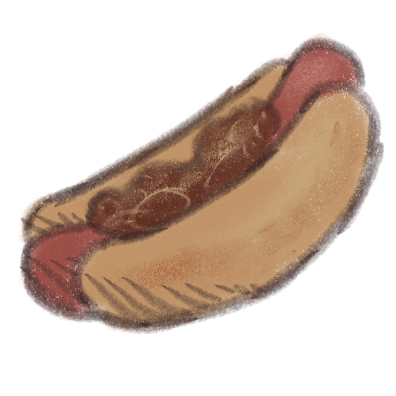

Chili Dogs

"Gotta eat fast."
This recipe is taken from the Sonic the Hedgehog's 25th Anniversary magazine that I still can't find in my parents' house. It's gotta be there somewhere...
Ingredients:
- 200g ground beef
- 1 green pepper
- 1 small onion
- 1 garlic clove
- 1 can of chopped tomatoes
- 1 tablespoon of tomato paste
- Cumin
- Oregano
- Chili powder
- 100g of barbecue sauce
- Salt
- A pack of 8 sausages
- Hot dog rolls
- Cheddar cheese
Steps:
- Chop the onion and the pepper and crush up the garlic clove. Put them aside for later.
- Preheat the frying pan and some vegetable oil. Cook the meat on medium-high heat while stirring it occasionally. When the meat has turned from pink to brown, move to the next step.
- Add the chopped vegetables and cook for another 3 minutes. Then stir in the crushed tomatoes and add the paste and the barbecue sauce. Add a teaspoon of salt and then sprinkle on the cumin, oregano and chili powder to taste. Bring to the boil.
- Once boiled, reduce heat and allow to simmer, uncovered, for 10 minutes.
- Cook the hot dogs and prepare the buns.
- Place the hot dogs in the bun and then spoon the chili across the bun. Grate some cheese over the top.